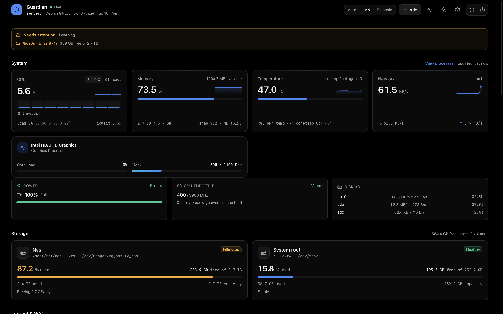
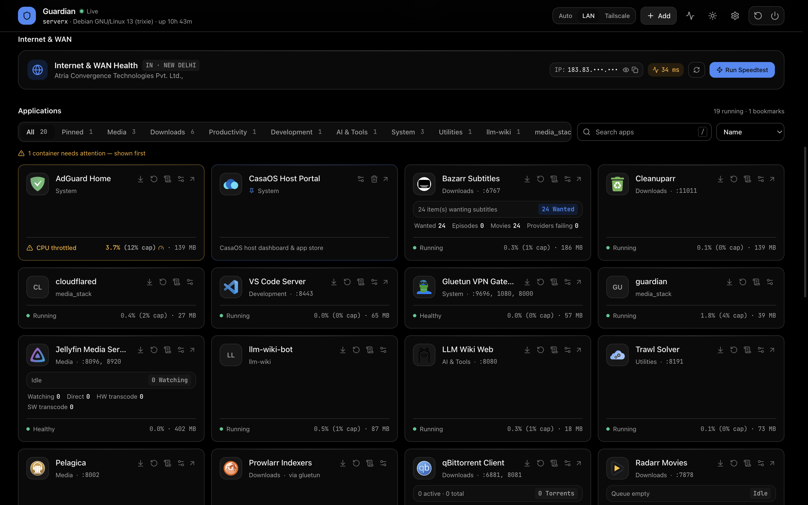
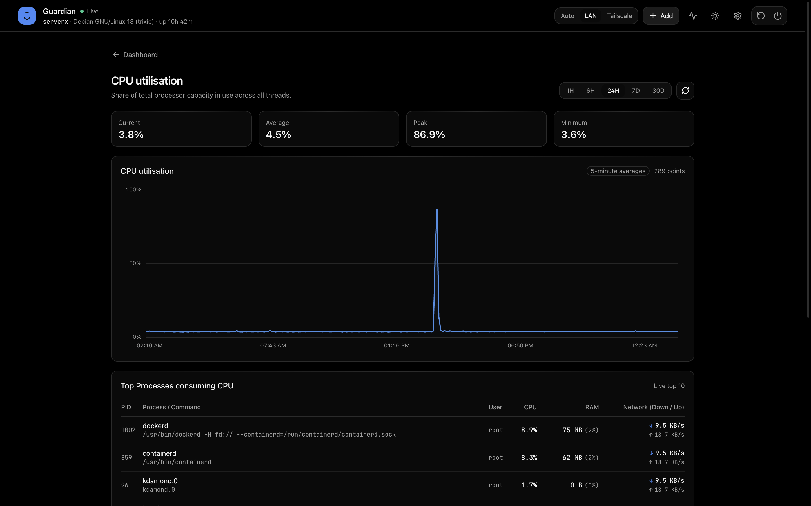
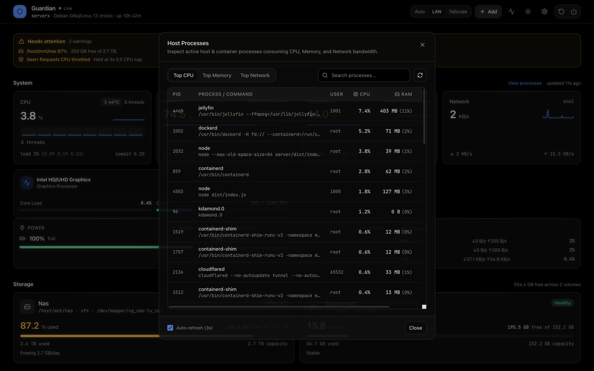
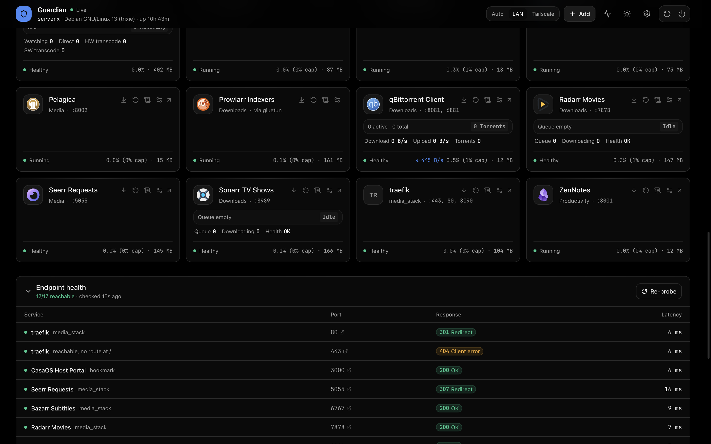

Real-time server telemetry, automated Docker container discovery, HTTP endpoint probing, and an interactive app launcher — running directly on your hardware without heavy agents or external dependencies.
curl -sSL https://raw.githubusercontent.com/vineetkishore01/Guardian/main/docker-compose.yml.example -o docker-compose.yml && docker compose up -d
services:
guardian:
image: ghcr.io/vineetkishore01/guardian:latest
container_name: guardian
restart: unless-stopped
ports:
- "3001:3001"
volumes:
# Docker socket (container stats, logs, restart, health)
- /var/run/docker.sock:/var/run/docker.sock
# Host telemetry (procfs & sysfs)
- /proc:/host/proc:ro
- /sys:/host/sys:ro
- /etc/os-release:/host/etc/os-release:ro
- /etc/hostname:/host/etc/hostname:ro
# Host storage (rslave discovers submounts like /mnt, /media)
- /:/host/root:ro,rslave
# Persisted icons, bookmarks, 30-day history, logs
- guardian_data:/data
environment:
- HOST_PROC=/host/proc
- HOST_SYS=/host/sys
- HOST_ETC=/host/etc
- HOST_ROOT=/host/root
- PORT=3001
- NODE_ENV=production
deploy:
resources:
limits:
memory: 128M
cpus: '0.50'
volumes:
guardian_data:
name: guardian_datalinux/arm64 & linux/amd64
Click any view below to inspect Guardian's interface. Every pixel is crafted for true-black AMOLED clarity with meaningful color encoding.





No cloud telemetry. No heavy JavaScript bundles. Just raw kernel VFS performance and clean Server-Sent Events.
Directly reads /proc/stat, /proc/meminfo, /proc/diskstats, and /sys/class/hwmon. Uncovers I/O wait stalls and Intel/AMD thermal throttling that coarse guest monitors miss completely.
No PostgreSQL, InfluxDB, or SQLite locks. Guardian maintains a tiered in-memory ring buffer (15s samples for 6h, 5m for 7d, 1h for 30d) that effortlessly persists to a lightweight JSON file surviving container restarts.
Never hammers your CPU with aggressive 1-second browser polling. A single centralized collector loop samples on cadence and streams immutable snapshots to all open tabs over Server-Sent Events.
Inspects the Docker daemon socket to auto-detect running containers. Preloaded with high-res SVG icons and categories for 60+ popular self-hosted applications including Jellyfin, Sonarr, Radarr, and Home Assistant.
Continuously probes exposed container ports on a 60-second cycle. Detects HTTP latency, redirect loops, 401/403 auth checkpoints, and silent backend application crashes before you notice them.
Reboot or power off your bare-metal server directly from the header. Protected by strict safety gates: disabled by default and requires typing the exact hostname to prevent accidental shutdowns.
Compare Guardian against traditional homelab dashboards and monitoring tools.
| Feature / Capability | 🛡️ Guardian | Portainer | Netdata | Homer / Dashy |
|---|---|---|---|---|
| Memory Footprint (Idle) | ~38 MB | ~120 MB | ~250 MB+ | ~80 MB (Dashy) |
| External Database Needed | None (Zero-DB) | Embedded SQLite | Custom DB engine | None (YAML only) |
| Real Host Telemetry (/proc, /sys) | ✓ Full VFS Precision | ✗ Container Stats Only | ✓ Full Telemetry | ✗ None |
| Streaming Updates | ✓ Server-Sent Events | ✗ REST Polling | ✓ WebSocket | ✗ Static / Fetch |
| Built-in App Launcher | ✓ Auto-Discovered + Widgets | ✗ Management Only | ✗ Charts Only | ✓ Manual YAML Setup |
| Multi-Architecture Image | ✓ amd64 + arm64 (Pi) | ✓ Yes | ✓ Yes | ✓ Yes |
| Setup Time | 5 Seconds (1 Command) | 2 Minutes | 3 Minutes | 15+ Minutes (Config editing) |
From a tiny fanless mini-PC to a multi-socket enterprise rack, Guardian delivers identical zero-dependency performance.
No signups, no cloud logins, and no complex configuration files. Just copy the command, start the container, and open your browser.
Get Started Now